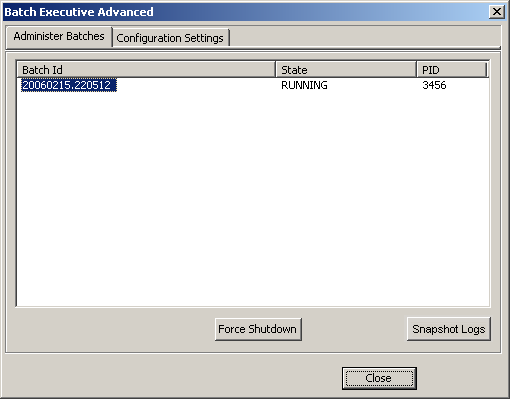

Administer batches advanced options
This dialog permits the forced shutdown of a batch and allows you to take a snapshot of all the pertinent runtime information for a batch.
Taking a Snapshot Log
Select the batch.
Click the Snapshot Logs button.
The batch's runner directory, EVT file and the standard batch log files are copied into a folder under the DeltaV\DVData\Batch\Logs folder
Forcing a Batch Shutdown
Select the batch to shut down.
Click the Force Shutdown button.
Click YES to acknowledge the warning message and proceed with the shutdown.
Click NO to acknowledge the warning message and cancel the shutdown (no shutdown takes place).
Once the batch is in the LOST state, open the Batch Operator Interface (or the Batch Operate controls) and either remove it from the batch list or restart it.
If restarting the batch, you will have the option of restarting that batch as a Warm Restart or a Cold Restart.
